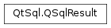

QSqlResult¶
Synopsis¶
Functions¶
- def
addBindValue(val, type) - def
at() - def
bindValueType(placeholder) - def
bindValueType(pos) - def
bindingSyntax() - def
boundValue(placeholder) - def
boundValue(pos) - def
boundValueCount() - def
boundValueName(pos) - def
boundValues() - def
clear() - def
driver() - def
executedQuery() - def
hasOutValues() - def
isActive() - def
isForwardOnly() - def
isSelect() - def
isValid() - def
lastError() - def
lastQuery() - def
numericalPrecisionPolicy() - def
resetBindCount()
Virtual functions¶
- def
bindValue(placeholder, val, type) - def
bindValue(pos, val, type) - def
data(i) - def
detachFromResultSet() - def
execBatch([arrayBind=false]) - def
exec_() - def
fetch(i) - def
fetchFirst() - def
fetchLast() - def
fetchNext() - def
fetchPrevious() - def
handle() - def
isNull(i) - def
lastInsertId() - def
nextResult() - def
numRowsAffected() - def
prepare(query) - def
record() - def
reset(sqlquery) - def
savePrepare(sqlquery) - def
setActive(a) - def
setAt(at) - def
setForwardOnly(forward) - def
setLastError(e) - def
setNumericalPrecisionPolicy(policy) - def
setQuery(query) - def
setSelect(s) - def
size()
Detailed Description¶
The
PySide2.QtSql.QSqlResultclass provides an abstract interface for accessing data from specific SQL databases.Normally, you would use
PySide2.QtSql.QSqlQueryinstead ofPySide2.QtSql.QSqlResult, sincePySide2.QtSql.QSqlQueryprovides a generic wrapper for database-specific implementations ofPySide2.QtSql.QSqlResult.If you are implementing your own SQL driver (by subclassing
PySide2.QtSql.QSqlDriver), you will need to provide your ownPySide2.QtSql.QSqlResultsubclass that implements all the pure virtual functions and other virtual functions that you need.See also
-
class
PySide2.QtSql.QSqlResult(db)¶ Parameters: db – PySide2.QtSql.QSqlDriverCreates a
PySide2.QtSql.QSqlResultusing database driverdb. The object is initialized to an inactive state.
-
PySide2.QtSql.QSqlResult.BindingSyntax¶ This enum type specifies the different syntaxes for specifying placeholders in prepared queries.
Constant Description QSqlResult.PositionalBinding Use the ODBC-style positional syntax, with “?” as placeholders. QSqlResult.NamedBinding Use the Oracle-style syntax with named placeholders (e.g., “:id”)
-
PySide2.QtSql.QSqlResult.VirtualHookOperation¶
-
PySide2.QtSql.QSqlResult.addBindValue(val, type)¶ Parameters: - val – object
- type –
PySide2.QtSql.QSql.ParamType
Binds the value
valof parameter typeparamTypeto the next available position in the current record (row).See also
-
PySide2.QtSql.QSqlResult.at()¶ Return type: PySide2.QtCore.intReturns the current (zero-based) row position of the result. May return the special values
QSql.BeforeFirstRoworQSql.AfterLastRow.
-
PySide2.QtSql.QSqlResult.bindValue(placeholder, val, type)¶ Parameters: - placeholder – unicode
- val – object
- type –
PySide2.QtSql.QSql.ParamType
This is an overloaded function.
Binds the value
valof parameter typeparamTypeto theplaceholdername in the current record (row).Note
Binding an undefined placeholder will result in undefined behavior.
See also
-
PySide2.QtSql.QSqlResult.bindValue(pos, val, type) Parameters: - pos –
PySide2.QtCore.int - val – object
- type –
PySide2.QtSql.QSql.ParamType
Binds the value
valof parameter typeparamTypeto positionindexin the current record (row).- pos –
-
PySide2.QtSql.QSqlResult.bindValueType(pos)¶ Parameters: pos – PySide2.QtCore.intReturn type: PySide2.QtSql.QSql.ParamTypeReturns the parameter type for the value bound at position
index.
-
PySide2.QtSql.QSqlResult.bindValueType(placeholder) Parameters: placeholder – unicode Return type: PySide2.QtSql.QSql.ParamTypeThis is an overloaded function.
Returns the parameter type for the value bound with the given
placeholdername.
-
PySide2.QtSql.QSqlResult.bindingSyntax()¶ Return type: PySide2.QtSql.QSqlResult.BindingSyntaxReturns the binding syntax used by prepared queries.
-
PySide2.QtSql.QSqlResult.boundValue(pos)¶ Parameters: pos – PySide2.QtCore.intReturn type: object Returns the value bound at position
indexin the current record (row).
-
PySide2.QtSql.QSqlResult.boundValue(placeholder) Parameters: placeholder – unicode Return type: object This is an overloaded function.
Returns the value bound by the given
placeholdername in the current record (row).
-
PySide2.QtSql.QSqlResult.boundValueCount()¶ Return type: PySide2.QtCore.intReturns the number of bound values in the result.
-
PySide2.QtSql.QSqlResult.boundValueName(pos)¶ Parameters: pos – PySide2.QtCore.intReturn type: unicode Returns the name of the bound value at position
indexin the current record (row).
-
PySide2.QtSql.QSqlResult.boundValues()¶ Return type: Returns a vector of the result’s bound values for the current record (row).
-
PySide2.QtSql.QSqlResult.clear()¶ Clears the entire result set and releases any associated resources.
-
PySide2.QtSql.QSqlResult.data(i)¶ Parameters: i – PySide2.QtCore.intReturn type: object Returns the data for field
indexin the current row as aPySide2.QtCore.QVariant. This function is only called if the result is in an active state and is positioned on a valid record andindexis non-negative. Derived classes must reimplement this function and return the value of fieldindex, or QVariant() if it cannot be determined.
-
PySide2.QtSql.QSqlResult.detachFromResultSet()¶
-
PySide2.QtSql.QSqlResult.driver()¶ Return type: PySide2.QtSql.QSqlDriverReturns the driver associated with the result. This is the object that was passed to the constructor.
-
PySide2.QtSql.QSqlResult.execBatch([arrayBind=false])¶ Parameters: arrayBind – PySide2.QtCore.boolReturn type: PySide2.QtCore.boolExecutes a prepared query in batch mode if the driver supports it, otherwise emulates a batch execution using
PySide2.QtSql.QSqlResult.bindValue()andexec().QSqlDriver.hasFeature()can be used to find out whether a driver supports batch execution.Batch execution can be faster for large amounts of data since it reduces network roundtrips.
For batch executions, bound values have to be provided as lists of variants (
QVariantList).Each list must contain values of the same type. All lists must contain equal amount of values (rows).
NULL values are passed in as typed QVariants, for example
QVariant(QVariant::Int)for an integer NULL value.Example:
q = QSqlQuery() q.prepare("insert into test (i1, i2, s) values (?, ?, ?)") col1 = [1, 3] col2 = [2, 4] col3 = ["hello", "world"] q.bindValue(0, col1) q.bindValue(1, col2) q.bindValue(2, col3) if not q.execBatch(): print q.lastError()
Here, we insert two rows into a SQL table, with each row containing three values.
See also
exec()QSqlDriver.hasFeature()
-
PySide2.QtSql.QSqlResult.exec_()¶ Return type: PySide2.QtCore.boolExecutes the query, returning true if successful; otherwise returns false.
See also
-
PySide2.QtSql.QSqlResult.executedQuery()¶ Return type: unicode Returns the query that was actually executed. This may differ from the query that was passed, for example if bound values were used with a prepared query and the underlying database doesn’t support prepared queries.
See also
-
PySide2.QtSql.QSqlResult.fetch(i)¶ Parameters: i – PySide2.QtCore.intReturn type: PySide2.QtCore.boolPositions the result to an arbitrary (zero-based) row
index.This function is only called if the result is in an active state. Derived classes must reimplement this function and position the result to the row
index, and callPySide2.QtSql.QSqlResult.setAt()with an appropriate value. Return true to indicate success, or false to signify failure.
-
PySide2.QtSql.QSqlResult.fetchFirst()¶ Return type: PySide2.QtCore.boolPositions the result to the first record (row 0) in the result.
This function is only called if the result is in an active state. Derived classes must reimplement this function and position the result to the first record, and call
PySide2.QtSql.QSqlResult.setAt()with an appropriate value. Return true to indicate success, or false to signify failure.
-
PySide2.QtSql.QSqlResult.fetchLast()¶ Return type: PySide2.QtCore.boolPositions the result to the last record (last row) in the result.
This function is only called if the result is in an active state. Derived classes must reimplement this function and position the result to the last record, and call
PySide2.QtSql.QSqlResult.setAt()with an appropriate value. Return true to indicate success, or false to signify failure.
-
PySide2.QtSql.QSqlResult.fetchNext()¶ Return type: PySide2.QtCore.boolPositions the result to the next available record (row) in the result.
This function is only called if the result is in an active state. The default implementation calls
PySide2.QtSql.QSqlResult.fetch()with the next index. Derived classes can reimplement this function and position the result to the next record in some other way, and callPySide2.QtSql.QSqlResult.setAt()with an appropriate value. Return true to indicate success, or false to signify failure.
-
PySide2.QtSql.QSqlResult.fetchPrevious()¶ Return type: PySide2.QtCore.boolPositions the result to the previous record (row) in the result.
This function is only called if the result is in an active state. The default implementation calls
PySide2.QtSql.QSqlResult.fetch()with the previous index. Derived classes can reimplement this function and position the result to the next record in some other way, and callPySide2.QtSql.QSqlResult.setAt()with an appropriate value. Return true to indicate success, or false to signify failure.
-
PySide2.QtSql.QSqlResult.handle()¶ Return type: object Returns the low-level database handle for this result set wrapped in a
PySide2.QtCore.QVariantor an invalidPySide2.QtCore.QVariantif there is no handle.Warning
Use this with uttermost care and only if you know what you’re doing.
Warning
The handle returned here can become a stale pointer if the result is modified (for example, if you clear it).
Warning
The handle can be NULL if the result was not executed yet.
Warning
PostgreSQL: in forward-only mode, the handle of
PySide2.QtSql.QSqlResultcan change after callingPySide2.QtSql.QSqlResult.fetch(),PySide2.QtSql.QSqlResult.fetchFirst(),PySide2.QtSql.QSqlResult.fetchLast(),PySide2.QtSql.QSqlResult.fetchNext(),PySide2.QtSql.QSqlResult.fetchPrevious(), nextResult().The handle returned here is database-dependent, you should query the type name of the variant before accessing it.
This example retrieves the handle for a sqlite result:
query = QSqlQuery ... v = query.result().handle() if v.isValid() and (v.typeName() == "sqlite3_stmt*"): # v.data() returns a pointer to the handle handle = v.data() if handle != 0: # check that it is not NULL ...
This snippet returns the handle for PostgreSQL or MySQL:
if v.typeName() == "PGresult*": handle = v.data() if handle != 0 ... if v.typeName() == "MYSQL_STMT*": handle = v.data() if handle != 0 ... }
See also
QSqlDriver.handle()
-
PySide2.QtSql.QSqlResult.hasOutValues()¶ Return type: PySide2.QtCore.boolReturns
trueif at least one of the query’s bound values is aQSql::Outor aQSql.InOut; otherwise returnsfalse.
-
PySide2.QtSql.QSqlResult.isActive()¶ Return type: PySide2.QtCore.boolReturns
trueif the result has records to be retrieved; otherwise returnsfalse.
-
PySide2.QtSql.QSqlResult.isForwardOnly()¶ Return type: PySide2.QtCore.boolReturns
trueif you can only scroll forward through the result set; otherwise returnsfalse.
-
PySide2.QtSql.QSqlResult.isNull(i)¶ Parameters: i – PySide2.QtCore.intReturn type: PySide2.QtCore.boolReturns
trueif the field at positionindexin the current row is null; otherwise returnsfalse.
-
PySide2.QtSql.QSqlResult.isSelect()¶ Return type: PySide2.QtCore.boolReturns
trueif the current result is from aSELECTstatement; otherwise returnsfalse.See also
-
PySide2.QtSql.QSqlResult.isValid()¶ Return type: PySide2.QtCore.boolReturns
trueif the result is positioned on a valid record (that is, the result is not positioned before the first or after the last record); otherwise returnsfalse.See also
-
PySide2.QtSql.QSqlResult.lastError()¶ Return type: PySide2.QtSql.QSqlErrorReturns the last error associated with the result.
-
PySide2.QtSql.QSqlResult.lastInsertId()¶ Return type: object Returns the object ID of the most recent inserted row if the database supports it. An invalid
PySide2.QtCore.QVariantwill be returned if the query did not insert any value or if the database does not report the id back. If more than one row was touched by the insert, the behavior is undefined.Note that for Oracle databases the row’s ROWID will be returned, while for MySQL databases the row’s auto-increment field will be returned.
See also
-
PySide2.QtSql.QSqlResult.lastQuery()¶ Return type: unicode Returns the current SQL query text, or an empty string if there isn’t one.
See also
-
PySide2.QtSql.QSqlResult.nextResult()¶ Return type: PySide2.QtCore.bool
-
PySide2.QtSql.QSqlResult.numRowsAffected()¶ Return type: PySide2.QtCore.intReturns the number of rows affected by the last query executed, or -1 if it cannot be determined or if the query is a
SELECTstatement.See also
-
PySide2.QtSql.QSqlResult.numericalPrecisionPolicy()¶ Return type: PySide2.QtSql.QSql.NumericalPrecisionPolicy
-
PySide2.QtSql.QSqlResult.prepare(query)¶ Parameters: query – unicode Return type: PySide2.QtCore.boolPrepares the given
queryfor execution; the query will normally use placeholders so that it can be executed repeatedly. Returns true if the query is prepared successfully; otherwise returnsfalse.See also
exec()
-
PySide2.QtSql.QSqlResult.record()¶ Return type: PySide2.QtSql.QSqlRecordReturns the current record if the query is active; otherwise returns an empty
PySide2.QtSql.QSqlRecord.The default implementation always returns an empty
PySide2.QtSql.QSqlRecord.See also
-
PySide2.QtSql.QSqlResult.reset(sqlquery)¶ Parameters: sqlquery – unicode Return type: PySide2.QtCore.boolSets the result to use the SQL statement
queryfor subsequent data retrieval.Derived classes must reimplement this function and apply the
queryto the database. This function is only called after the result is set to an inactive state and is positioned before the first record of the new result. Derived classes should return true if the query was successful and ready to be used, or false otherwise.See also
-
PySide2.QtSql.QSqlResult.resetBindCount()¶ Resets the number of bind parameters.
-
PySide2.QtSql.QSqlResult.savePrepare(sqlquery)¶ Parameters: sqlquery – unicode Return type: PySide2.QtCore.boolPrepares the given
query, using the underlying database functionality where possible. Returnstrueif the query is prepared successfully; otherwise returnsfalse.Note: This method should have been called “safePrepare()”.
See also
-
PySide2.QtSql.QSqlResult.setActive(a)¶ Parameters: a – PySide2.QtCore.boolThis function is provided for derived classes to set the internal active state to
active.See also
-
PySide2.QtSql.QSqlResult.setAt(at)¶ Parameters: at – PySide2.QtCore.intThis function is provided for derived classes to set the internal (zero-based) row position to
index.See also
-
PySide2.QtSql.QSqlResult.setForwardOnly(forward)¶ Parameters: forward – PySide2.QtCore.boolSets forward only mode to
forward. Ifforwardis true, onlyPySide2.QtSql.QSqlResult.fetchNext()is allowed for navigating the results. Forward only mode needs much less memory since results do not have to be cached. By default, this feature is disabled.Setting forward only to false is a suggestion to the database engine, which has the final say on whether a result set is forward only or scrollable.
PySide2.QtSql.QSqlResult.isForwardOnly()will always return the correct status of the result set.Note
Calling after execution of the query will result in unexpected results at best, and crashes at worst.
Note
To make sure the forward-only query completed successfully, the application should check
PySide2.QtSql.QSqlResult.lastError()for an error not only after executing the query, but also after navigating the query results.Warning
PostgreSQL: While navigating the query results in forward-only mode, do not execute any other SQL command on the same database connection. This will cause the query results to be lost.
-
PySide2.QtSql.QSqlResult.setLastError(e)¶ Parameters: e – PySide2.QtSql.QSqlErrorThis function is provided for derived classes to set the last error to
error.See also
-
PySide2.QtSql.QSqlResult.setNumericalPrecisionPolicy(policy)¶ Parameters: policy – PySide2.QtSql.QSql.NumericalPrecisionPolicy
-
PySide2.QtSql.QSqlResult.setQuery(query)¶ Parameters: query – unicode Sets the current query for the result to
query. You must callPySide2.QtSql.QSqlResult.reset()to execute the query on the database.
-
PySide2.QtSql.QSqlResult.setSelect(s)¶ Parameters: s – PySide2.QtCore.boolThis function is provided for derived classes to indicate whether or not the current statement is a SQL
SELECTstatement. Theselectparameter should be true if the statement is aSELECTstatement; otherwise it should be false.See also
-
PySide2.QtSql.QSqlResult.size()¶ Return type: PySide2.QtCore.intReturns the size of the
SELECTresult, or -1 if it cannot be determined or if the query is not aSELECTstatement.
© 2018 The Qt Company Ltd. Documentation contributions included herein are the copyrights of their respective owners. The documentation provided herein is licensed under the terms of the GNU Free Documentation License version 1.3 as published by the Free Software Foundation. Qt and respective logos are trademarks of The Qt Company Ltd. in Finland and/or other countries worldwide. All other trademarks are property of their respective owners.